Emuladores para Windows
Los emuladores son algo ya habitual y conocido entre muchos de nosotros por eso les traemos un variedad de emuladores para muestro pc desde consolas antiguas (Retro) esta Android.
Algunos de los programas o comandos que mostramos a continuación son más que nada para ayudar con algunas necesidades que se presenten. Nos puede recomendar algunos programas para subir a nuestra WEB o si encuentra algún problema con algunos links o comandos le agradecemos informar para mantener esta página activa. igual todos los comandos y los link fueron actualizados el 25-11-2023.
Sistema Operativo:
Android
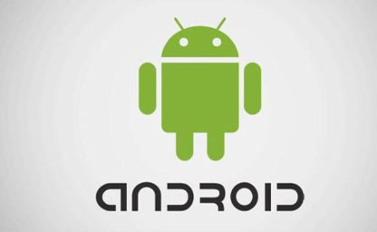Android es un sistema operativo móvil basado en el núcleo Linux y otros software de código abierto. Fue diseñado para dispositivos móviles con pantalla táctil, como teléfonos inteligentes y tabletas
Emuladores de Android
| Archivos | Servidores | ||
|---|---|---|---|
| BlueStacks | Mega | WEB Oficial | |
Game Cube
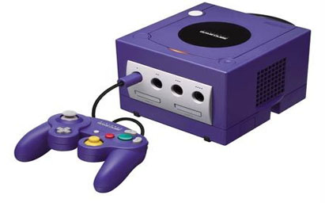Nintendo GameCube también llamada simplemente la GameCube y abreviada como GCN en América y NGC en Japón, es la quinta consola de sobremesa hecha por Nintendo. Sus principales características son su procesador central basado en un IBM PowerPC.
Emuladores de Game Cube
| Archivos | Servidores | ||
|---|---|---|---|
| Dolphin | Mega | WEB Oficial | |
| WhineCube | Mega | WEB Oficial | |
Gameboy Advance
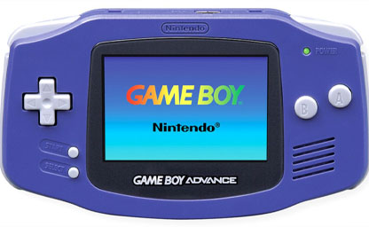La Game Boy Advance, abreviada como GBA, es una consola de videojuegos de la compañía Nintendo, fabricada desde marzo de 2001 hasta 2008. La GBA forma parte de la sexta generación de videoconsolas.
Emuladores de Gameboy Advance
| Archivos | Servidores | ||
|---|---|---|---|
| GB Enhanced+ | Mega | WEB Oficial | |
| Mednafen | Mega | WEB Oficial | |
| mGBA | Mega | WEB Oficial | |
| VisualBoyAdvance | Mega | WEB Oficial | |
Microsoft Xbox 360 y Xbox Clásica
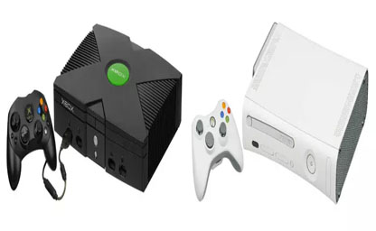Xbox, es una videoconsola doméstica y la primera entrega de la serie de videoconsolas Xbox fabricada por Microsoft. Salió a la venta como la primera incursión de Microsoft en el mercado de las consolas de videojuegos el 8 de noviembre de 2001 en Norteamérica, seguida de Australia, Europa y Japón en 2002.
Emuladores de Xbox 360 y Xbox Clásica
| Archivos | Servidores | ||
|---|---|---|---|
| CXBX | Mega | WEB Oficial | |
| DXBX | Mega | WEB Oficial | |
| Xenia | Mega | WEB Oficial | |
Nintendo 3DS
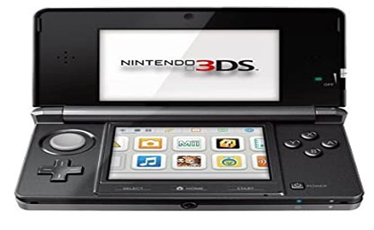Nintendo 3DS es una videoconsola portátil de la multinacional de origen japonés, Nintendo, para videojuegos y multimedia, cuya atracción principal es poder mostrar gráficos en 3D sin necesidad de gafas especiales, gracias a la autoestereoscopia. La consola es retrocompatible con la Nintendo DS y con el software de DSiWare.
Emuladores de Nintendo 3DS
| Archivos | Servidores | ||
|---|---|---|---|
| Citra | Mega | WEB Oficial | |
Nintendo 64
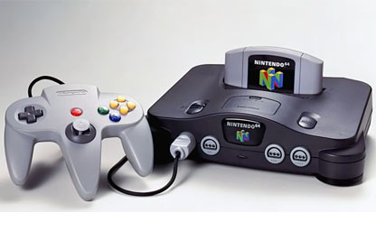Nintendo 64 es la cuarta videoconsola de sobremesa producida por Nintendo, desarrollada para suceder a la Super Nintendo. Fue la primera consola concebida para dar el salto del 2D al 3D. Compitió en el mercado de la quinta generación con Saturn de Sega y PlayStation de Sony.
Emuladores de Nintendo 64
| Archivos | Servidores | ||
|---|---|---|---|
| Project64 | Mega | WEB Oficial | |
| 1964 | Mega | WEB Oficial | |
| Mupen64Plus | Mega | WEB Oficial | |
Nintendo Entertainment System NES
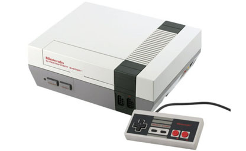Nintendo Entertainment System es la segunda consola de sobremesa de Nintendo, y es una videoconsola de ocho bits perteneciente a la tercera generación en la industria de los videojuegos. Fue lanzada por Nintendo en Norteamérica, Europa y Australia entre 1985 y 1987.
Emuladores de Nintendo Entertainment System NES
| Archivos | Servidores | ||
|---|---|---|---|
| FCEUX | Mega | WEB Oficial | |
| Jnes | Mega | WEB Oficial | |
| Nestopia | Mega | WEB Oficial | |
| VirtuaNES | Mega | WEB Oficial | |
Nintendo Switch
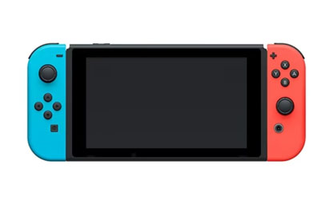Nintendo Switch es una consola de videojuegos desarrollada por Nintendo. Conocida en el desarrollo por su nombre código «NX», se dio a conocer en octubre de 2016 y fue lanzada mundialmente el 3 de marzo de 2017.
Emuladores de Nintendo Switch
| Archivos | Servidores | ||
|---|---|---|---|
| Ryujinx | Mega | WEB Oficial | |
| Yuzu | Mega | WEB Oficial | |
Nintendo Wii
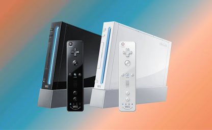Nintendo Wii es la sexta videoconsola producida por Nintendo y estrenada el 19 de noviembre de 2006 en Norteamérica y el 8 de diciembre del mismo año en Europa. Perteneciente a la séptima generación de videoconsolas
Emuladores de Nintendo Wii
| Archivos | Servidores | ||
|---|---|---|---|
| Dolphin | Mega | WEB Oficial | |
Nintendo Wii U
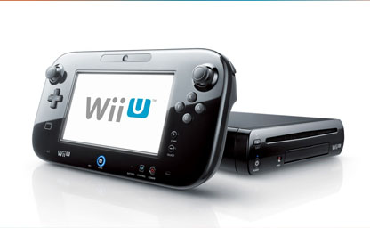Wii U , con nombre clave Project Café, es una consola perteneciente a la octava generación de videoconsolas, siendo la séptima consola de sobremesa creada por Nintendo y directa sucesora de Wii. La consola fue lanzada el 18 de noviembre de 2012 en terreno norteamericano siendo su fecha de apertura.
Emuladores de Nintendo Wii U
| Archivos | Servidores | ||
|---|---|---|---|
| CEMU | Mega | WEB Oficial | |
PlayStation 1
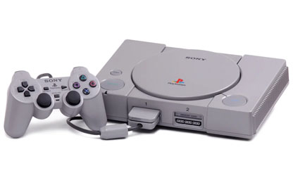PlayStation es la primera videoconsola de Sony, y la primera de dicha compañía en ser diseñada por Ken Kutaragi, y es una videoconsola de sobremesa de 32 bits lanzada por Sony Computer Entertainment el 3 de diciembre de 1994 en Japón.
Emuladores de PlayStation 1
| Archivos | Servidores | ||
|---|---|---|---|
| ePSXe | Mega | WEB Oficial | |
PlayStation 2
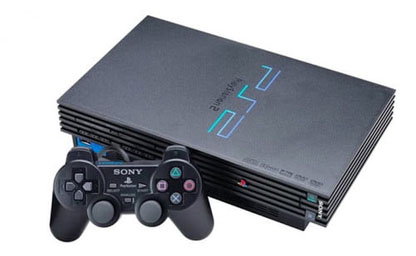La PlayStation 2 es la segunda videoconsola de sobremesa producida por Sony Computer Entertainment, y la tercera consola de Sony en ser diseñada por Ken Kutaragi. Además de ser la sucesora de la PlayStation.
Emuladores de PlayStation 2
| Archivos | Servidores | ||
|---|---|---|---|
| PCSX2 | Mega | WEB Oficial | |
| EmulatorX | Mega | WEB Oficial | |
PlayStation 3
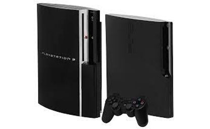PlayStation 3 es la tercera videoconsola del modelo PlayStation de Sony Computer Entertainment. Es la quinta y última consola de Sony en ser diseñada por Ken Kutaragi y forma parte de las videoconsolas de séptima generación.
Emuladores de PlayStation 3
| Archivos | Servidores | ||
|---|---|---|---|
| RPCS3 | Mega | WEB Oficial | |
| ESX Emulator | Mega | WEB Oficial | |
PlayStation Portable
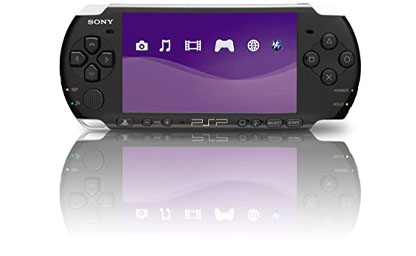La PlayStation Portable (PSP) es una videoconsola portátil de la multinacional de origen japonés, y la cuarta consola de Sony en ser diseñada por Ken Kutaragi, PSP servía para videojuegos, conectarse a internet y reproducir y ver multimedia.
Emuladores de PlayStation Portable
| Archivos | Servidores | ||
|---|---|---|---|
| PSSPP | Mega | WEB Oficial | |
| JPCSP | Mega | WEB Oficial | |
Super Nintendo SNES
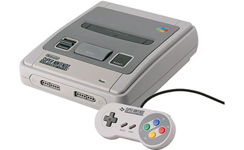a Super Nintendo Entertainment System, conocida popularmente como la Super Nintendo, también llamada la Super Famicom en Japón7, y la Hyundai Super Comboy en Corea del Sur, también nombrada oficialmente de forma abreviada como la Super NES o SNES en América y como la Super Nintendo en Europa.
Emuladores de Super Nintendo SNES
| Archivos | Servidores | ||
|---|---|---|---|
| Bizhawk | Mega | WEB Oficial | |
| Snes9x | Mega | WEB Oficial | |
RetroArch
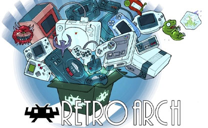RetroArch es un programa con implementación de la API de libretro, diseñado como un front-end para ésta. Es gratuito, de código abierto, multiplataforma y disponible en virtud de la GNU GPLv3.
Emuladores de Juegos Retro
| Archivos | Servidores | ||
|---|---|---|---|
| RetroArch | Mega | WEB Oficial | |
RETROBAT
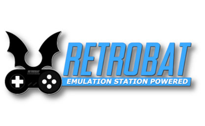RetroBat es una distribución de software diseñada para la emulación y para ser la forma más fácil de disfrutar de su colección de juegos en su computadora con Windows. La interfaz EmulationStation suministrada es completamente funcional y altamente personalizable. Puede ejecutar todos sus juegos desde él y buscar imágenes en línea para mejorar la presentación de su colección.
RETROBAT
| Archivos | Servidores | ||
|---|---|---|---|
| RETROBAT | Mega | WEB Oficial | |